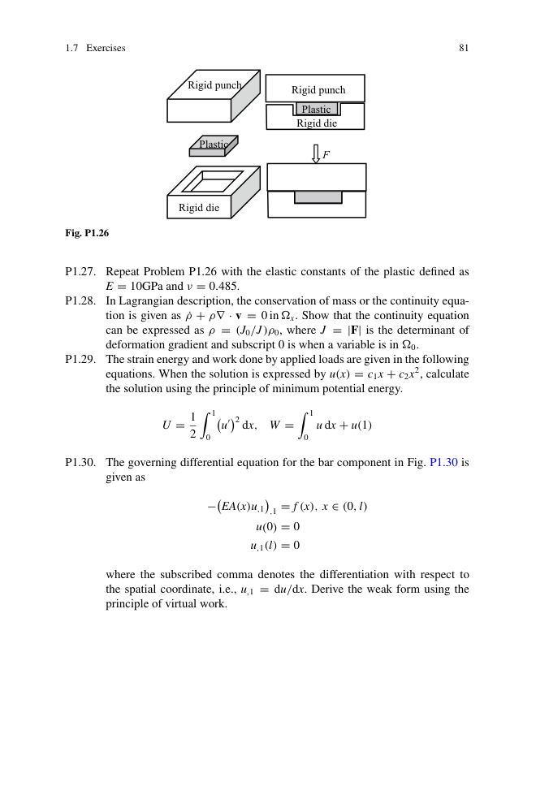
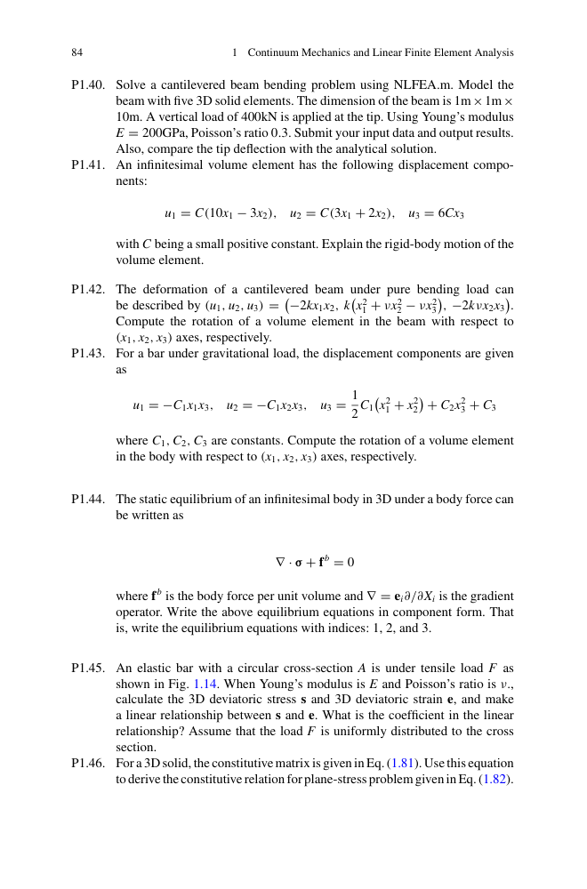
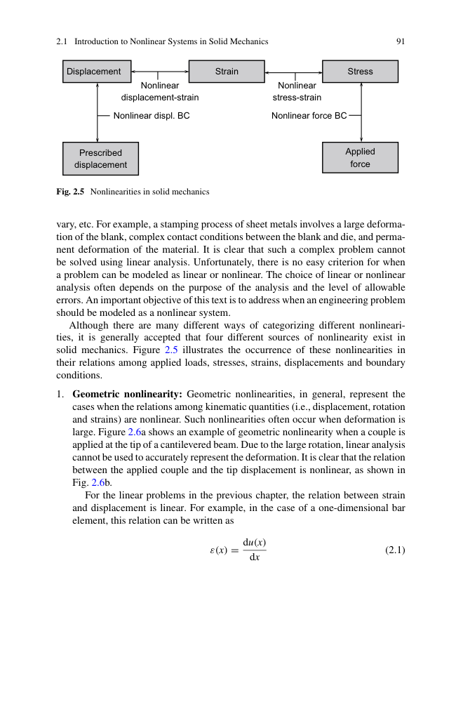
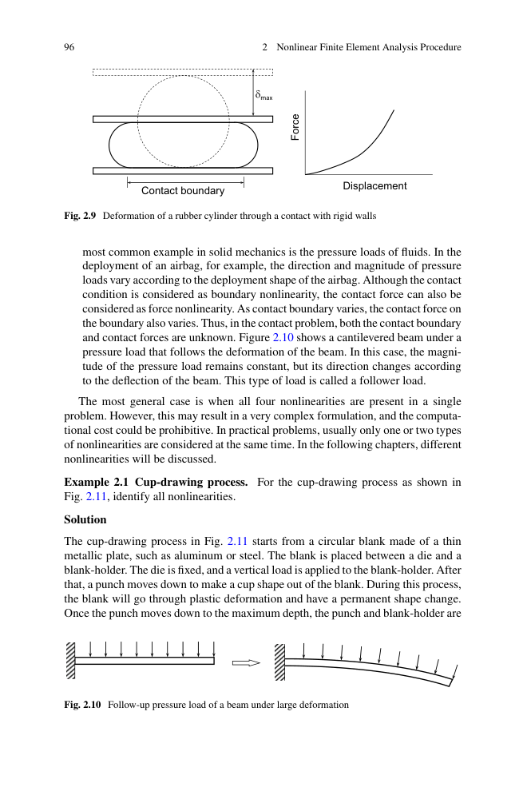
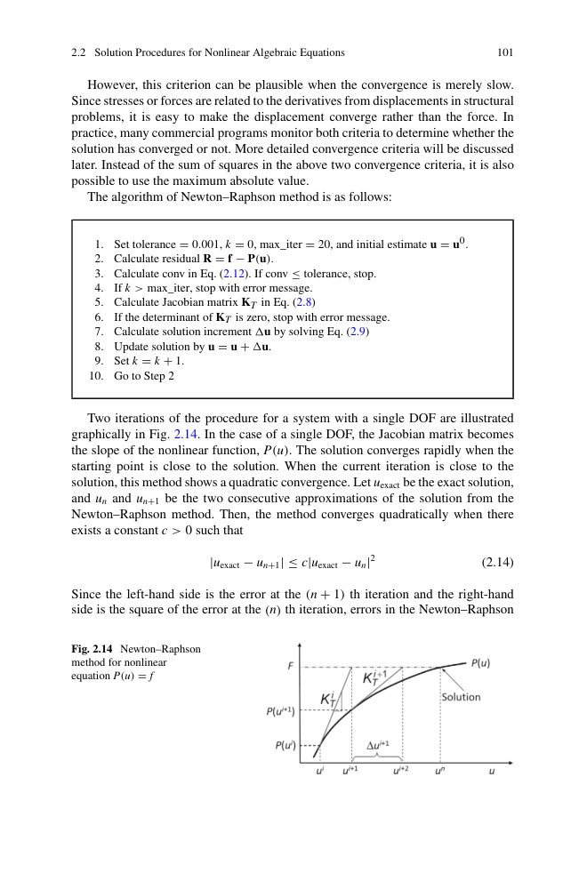
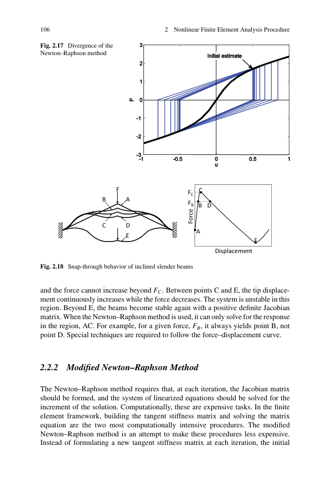
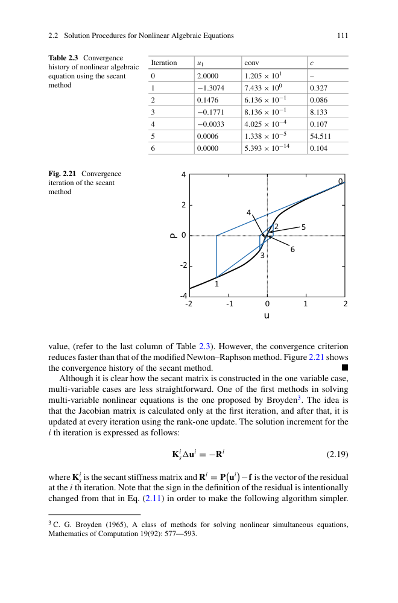
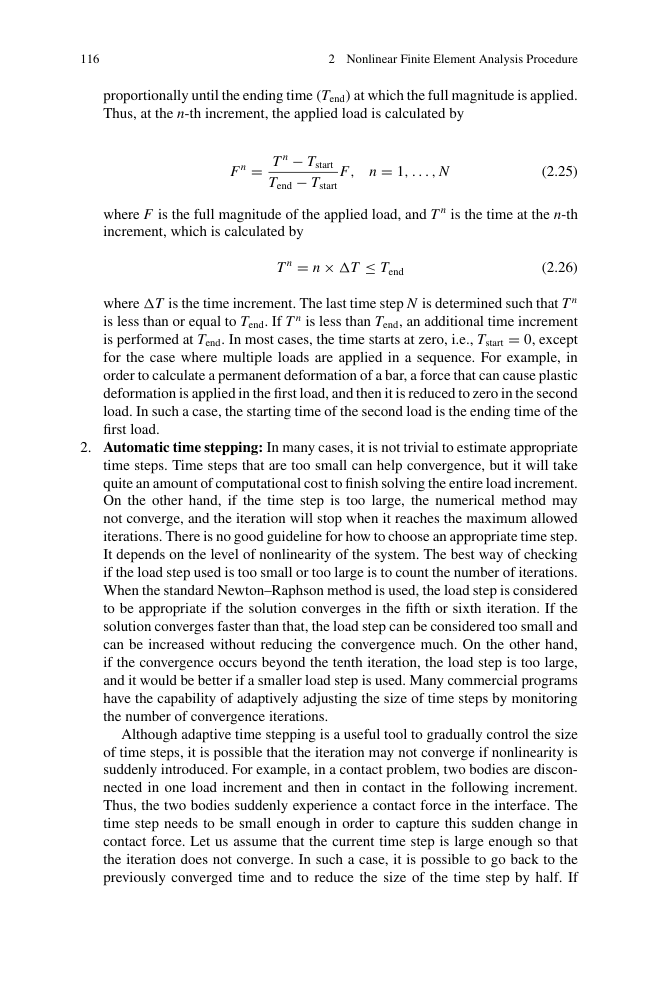
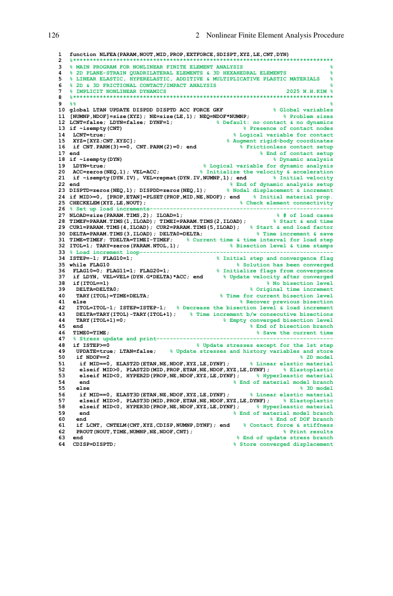
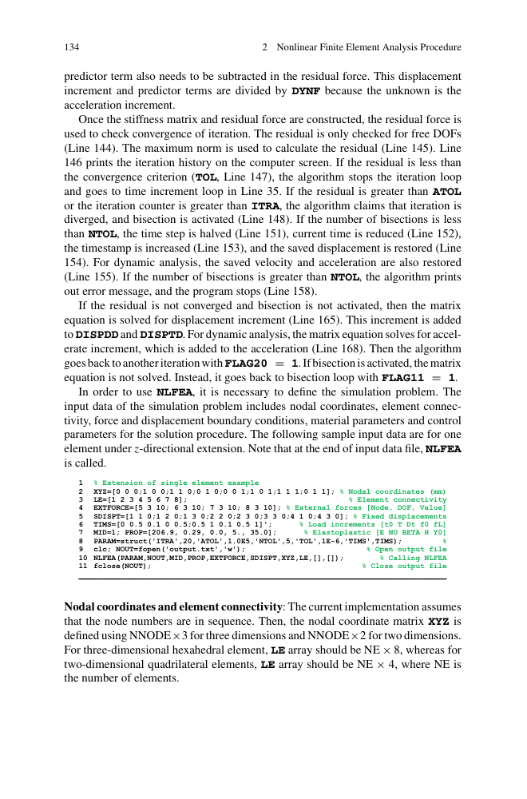

第 2 章 · 非线性有限元分析过程
Nonlinear Finite Element Analysis Procedure · PDF p87–150
📖 2.1 固体力学中的非线性系统
2.1.1 非线性 vs 线性
非线性问题不满足叠加原理，刚度随位移/载荷变化。本教材把它们统一为方程：
其中 u = 节点位移向量，f = 外加载荷，P(u) = 内力向量。线性情况下 P(u) = K u（K 恒定）；非线性情况下 P 是 u 的非线性函数，必须迭代求解。
2.1.2 四大非线性类型
固体力学中公认四大非线性来源：
- 材料非线性（Material）：应力-应变非线性，如弹塑性、超弹、蠕变
- 几何非线性（Geometry）：大变形 / 大转动，平衡方程写在变形构形
- 边界非线性（Boundary）：接触边界变化（接触问题）
- 载荷非线性（Force）：载荷大小/方向随变形变化（follower force）

图 2.5 四大非线性在固体力学中的位置（位移/应变/应力/载荷/边界条件的关系）

图 2.6 几何非线性例子：悬臂梁大转动（力矩-位移非线性）
金属板冲压成杯形：① 板料塑性变形（材料非线性）；② 厚度减薄、轮廓大变形（几何非线性）；③ 板料与模具接触边界变化（边界非线性）。
实际工程通常只考虑 1-2 种主非线性，同时考虑全部 4 种计算成本极高。
2.1.3 工程中的非线性例子
- 🚗 汽车碰撞（材料塑性 + 大变形 + 接触 + 动力）
- 🛢️ 压力容器（材料塑性 + 蠕变）
- 🛞 轮胎滚动（大变形 + 接触 + 动力）
- 🏗️ 地震响应（材料塑性 + 动力）
- 🛩️ 鸟撞发动机叶片（材料失效 + 接触 + 动力）
🔄 2.2 非线性代数方程求解方法
非线性方程 P(u) = f 没有解析解（除简单情况），必须迭代。从初值 u0 开始，每步求增量 Δu 直到收敛。

图 2.12 串联非线性弹簧：F = 100 N，k₁ = 50 + 500u₁，k₂ = 100 + 200(u₂-u₁)
两弹簧串联：k₁ = 50 + 500u₁ N/m，k₂ = 100 + 200u₂ N/m。F = 100 N。
组装得非线性方程组：
200u1² − 400u1u2 + 200u2² − 100u1 + 100u2 = 100
图 2.13 显示：可能有多解或无解，需用数值方法找零点。
2.2.1 Newton-Raphson 法 (NR)
最经典。在当前 u(i) 做一阶 Taylor 展开：
KT = ∂P/∂u = 切线刚度矩阵。令 P(u(i+1)) = f，解得：
R = f − P(u(i)) = 残差力。迭代公式：

图 2.16 Newton-Raphson 迭代的几何解释：每步用切线逼近曲线
- ① 计算残差 R(u(i)) = f − P(u(i))
- ② 计算切线刚度 KT(u(i)) = ∂P/∂u
- ③ 解线性方程 KT Δu = R
- ④ 更新 u(i+1) = u(i) + Δu
- ⑤ 检查收敛（力残差 / 位移增量 / 能量）
- ⑥ 未收敛则回步骤 ①
收敛速度：二次收敛（NR 法的最大优势）
2.2.2 修正 Newton-Raphson (mNR)
每 N 步才更新一次切线刚度：
优：组装/分解刚度少 N 次 → 节省计算
劣：线性收敛，收敛慢
2.2.3 增量割线法
用割线刚度（两点间的斜率）代替切线刚度：
适合材料软化/硬化等弱非线性问题。
2.2.4 增量力法
载荷按增量施加：fn+1 = fn + Δf，每步用 NR 求解当前载荷下的平衡。

图 2.19 增量力法：把总载荷切成 N 步，每步 NR 求解
2.2.5 弧长法（Arc-Length Method）
NR 法在极限点（载荷-位移曲线峰谷）失效——切线刚度奇异。弧长法引入载荷因子 λ 作为额外未知量，约束位移增量的弧长：
其中 Δl 是弧长增量。能通过 snap-through（位移跳跃）和 snap-back（力反向）。
🛠️ 2.3 非线性有限元分析步骤
5 个核心步骤（NR 法框架）：
- 2.3.1 状态确定：根据当前位移计算应变、应力、内力
- 2.3.2 残差计算：R = fext − Pint
- 2.3.3 收敛判断：|R| < tol？
- 2.3.4 线性化：计算 KT = ∂P/∂u
- 2.3.5 求解：解 KT Δu = R，更新 u，回步骤 1

图 2.21 NLFEA 求解流程图
2.3.3 收敛准则（3 种常用）
商业软件通常同时使用 2-3 种准则，全部满足才收敛。

图 2.23 收敛准则：力 / 位移 / 能量 三种判据
💻 2.4 MATLAB 实现：1D 非线性杆
第 2.4 节给出 1D 杆的非线性 NR 求解 MATLAB 代码（PDF p124-139）。
% 主循环：载荷增量
for n = 1:N
f_ext = n * delta_f;
u = u_old; % 从上次增量末状态开始
% NR 迭代
for i = 1:MaxIter
[P_int, K_T] = assemble_internal(u); % 组装内力+切线刚度
R = f_ext - P_int; % 残差
if norm(R)/norm(f_ext) < 1e-3, break; end
du = K_T \ R; % 解线性方程
u = u + du; % 更新
end
u_old = u; % 保存当前增量末状态
end

图 2.27 1D 杆单元非线性分析的 NR 迭代过程

图 2.28 3D 实体单元弯曲（5 个 hex8 单元模拟悬臂梁）

图 2.28b 应力 σ₂₂ 等高线：上下表面 ±1.97 MPa（3D 弯曲）
🏢 2.5 商业 FEA 软件中的非线性控制
实际工程中通常用商业软件（Abaqus / ANSYS / Nastran）。共同的非线性控制要素：
- 载荷步 (Load Step)：分析步，载荷增量的边界
- 子步 (Substep)：每个分析步内的载荷增量数
- 求解器：Sparse / Direct / Iterative
- 收敛容差：力 / 位移 / 旋转容差
- 最大迭代数：每子步 NR 迭代上限
- 弧长法：通过极限点（snap-through / snap-back）
- 📍 收敛困难：减小子步、放松容差、换修正 NR、试弧长法
- 📍 不收敛：检查模型（边界、接触、材料、单位）
- 📍 计算慢：用稀疏求解器、并行、mNR 减少刚度组装
- 📍 二分法：商业软件常自动减半步长，直到收敛
📌 2.6 本章总结
- ✅ 4 大非线性类型：材料 / 几何 / 边界 / 载荷
- ✅ 4 大求解方法：NR / 修正 NR / 增量割线 / 增量力 + 弧长法
- ✅ 5 步求解流程：状态确定 / 残差 / 收敛 / 线性化 / 求解
- ✅ 3 大收敛准则：力 / 位移 / 能量
- ✅ 商业软件控制要素（载荷步、子步、求解器、容差、弧长）
第 3 章将深入几何非线性（大变形的 Lagrangian 公式）。
📝 2.7 习题（PDF p145-150）
- 2.1 几何非线性判断（汽车碰撞、橡胶密封、压力容器、桥梁共振）
- 2.2 单根杆 NR 求解（k = 50 + 500u）
- 2.3 串联弹簧 NR 求解
- 2.4 mNR 与 NR 比较（迭代次数 / 总计算量）
- 2.5 弧长法通过 snap-through
- 2.10 1D 杆的几何非线性（轴向力诱发弯曲）
- 2.17 1D 杆非线性 NR 迭代（手算前 2 步）
- 2.20 用 MATLAB 写 NLFEA 程序
{kind=link}
{kind=link}
{kind=link}
{kind=link}
{kind=link}
{kind=link}
{kind=link}
{kind=link}
{kind=link}
{kind=link}
{kind=link}